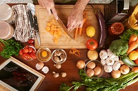

Porque gosto desse hobby?
Pois Cozinhar é essencial para a saúde física e mental, pois permite controlar a qualidade dos ingredientes, reduzindo o consumo de sódio, gorduras e produtos industrializados. Além de promover uma alimentação mais nutritiva, o hábito estimula a criatividade, alivia a ansiedade, economiza dinheiro e fortalece laços afetivos ao compartilhar refeições
Dicas práticas
- Organização: Prepare e pique todos os ingredientes antes de ligar o fogo para evitar correria.
- Controle de Temperatura: Pré-aqueça a panela antes de grelhar e deixe as carnes perderem o gelo da geladeira antes de cozinhar.
- Técnica de Corte: Corte os alimentos em tamanhos uniformes para que cozinhem por igual ao mesmo tempo.
- Sabor e Ajuste: Prove a comida durante o preparo e use a água do cozimento das massas para dar cremosidade aos molhos.
- Manutenção: Mantenha suas facas sempre afiadas e limpe a bancada enquanto cozinha para não acumular louça.

Equipamentos
| Equipametos | ||
|---|---|---|
| Item | Uso | Preço |
| Tábuas de corte | garantir a segurança alimentar e evitar a contaminação cruzada | R$50 |
| Colheres de silicone | mexer, refogar, servir e raspar alimentos sem danificar superfícies | R$100 |
| Conjunto de facas | preparar alimentos com precisão, cortando, picando e fatiando | R$200 |